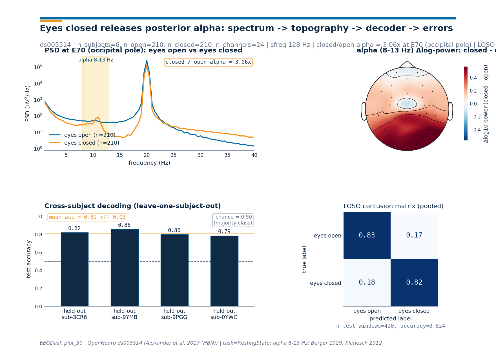

Note
Go to the end to download the full example code or to run this example in your browser via Binder.
Decode eyes open vs. eyes closed#
Difficulty 1 | Runtime: 5m | Compute: CPU
Hans Berger reported in 1929 that the parieto-occipital alpha rhythm
rises when the eyes close and falls when they open [Berger, 1929]. This
textbook resting-state EEG result that every dataset still reproduces
[Klimesch, 2012]. The contrast is the simplest possible
binary EEG decoding problem and an excellent first resting-state
tutorial. We reproduce it on Healthy Brain Network ds005514
[Alexander et al., 2017] reachable through NEMAR
[Delorme et al., 2022]: a leave-one-subject-out logistic regression on
log alpha-band power features.
Can we tell from a 2-second EEG snippet whether a child has the eyes open or closed? Keywords: classification, resting-state, alpha
Learning objectives#
After this tutorial you will be able to:
Configure the canonical EOEC preprocessing recipe (24-channel HydroCel pick, 128 Hz resample, 1-55 Hz band-pass) on HBN
ds005514.Build balanced 2-second windows around the
hbn_ec_ec_reannotationevents and read the live counts offbraindecode.datasets.BaseConcatDataset.Compute Welch PSDs with
mne.time_frequency.psd_array_welch()and read the textbook posterior alpha bump from the spectrum and the topomap.Train a leave-one-subject-out
sklearn.linear_model.LogisticRegressionon log alpha-band power split withsklearn.model_selection.GroupKFold, then read the chance-vs-accuracy line.Produce a single 4-panel summary figure (PSD, topomap, per-fold accuracy, pooled confusion matrix) styled by
eegdash.viz.style_figure().
Requirements#
About 5 min on CPU on first run; under 45 s once the six subjects are cached (~120 MB into
cache_dir).Network on first call into
cache_dir; offline thereafter.Prerequisites: Preprocess EEG and create windows, Split EEG without subject leakage.
Concept: Preprocessing decisions.
Setup. Seed (E3.21) and a parameterized cache dir (E3.24) keep the tutorial reproducible and the network calls confined to the first run.
import json
import os
import warnings
from pathlib import Path
import matplotlib.pyplot as plt
import mne
import numpy as np
import pandas as pd
from braindecode.preprocessing import create_windows_from_events, preprocess
from mne.time_frequency import psd_array_welch
from sklearn.linear_model import LogisticRegression
from sklearn.metrics import accuracy_score
from sklearn.model_selection import GroupKFold
from eegdash import EEGDashDataset
from collections import Counter
from braindecode.preprocessing import Preprocessor
from eegdash.hbn.preprocessing import hbn_ec_ec_reannotation
from eegdash.viz import use_eegdash_style
use_eegdash_style()
warnings.simplefilter("ignore", category=RuntimeWarning)
mne.set_log_level("ERROR")
SEED = 42
np.random.seed(SEED)
cache_dir = Path(os.environ.get("EEGDASH_CACHE_DIR", Path.home() / ".eegdash_cache"))
cache_dir.mkdir(parents=True, exist_ok=True)
Concept: the alpha rhythm and what eyes-closed does to it#
The alpha rhythm is the 8-13 Hz oscillation that dominates the parieto-occipital scalp at rest. Niedermeyer 1999 frames it as the idling rhythm of the visual cortex: when the eyes close, visual input drops and the cortico-thalamic loop releases a strong rhythmic rebound that rides on top of the broadband spectrum. Open the eyes and the rhythm is suppressed in milliseconds; alpha desynchronizes with engagement, the inhibitory gating story Klimesch 2012 lays out. Two facts shape every figure below.
The bump sits over occipital (O1, Oz, O2) and parietal (Pz) cortex. The scalp pattern is the cleanest topographic landmark in the resting spectrum.
The bump is log-scale large: closing the eyes typically multiplies 8-13 Hz power 1.5-3x at the occipital pole. Linear-scale plots compress the difference; we plot PSDs on a log y-axis throughout.
eyes open eyes closed
------------ ------------
visual cortex engaged visual cortex idling
alpha desynchronized alpha synchronized
low 8-13 Hz power high 8-13 Hz power
flat posterior topography parieto-occipital alpha bump
-> "open" class label -> "closed" class label
Validate your result#
Before you trust the decoder, verify the data pipeline:
Window counts. For 6 HBN subjects, you should expect ~100-200 windows per class.
Class balance. The reannotation should produce roughly equal counts for EO and EC.
Tensor shape. Each window is
(24, 256)(24 channels, 2 seconds at 128 Hz).Accuracy. Expect cross-subject accuracy significantly above chance (typically >0.70).
Interpretation. The confusion matrix should show whether one state is harder to decode (often “open” due to more artifacts).
Step 1. Configure the EOEC recipe#
The canonical HBN eyes-open / eyes-closed configuration: HBN release 9
ds005514 (doi:10.18112/openneuro.ds005514.v1.0.0), label mapping
eyes_open=0 / eyes_closed=1, the 24-channel HydroCel pick (the
published HBN baseline montage), resample to 128 Hz, and a non-causal
IIR Butterworth band-pass 1.0-55.0 Hz
(braindecode.preprocessing.Preprocessor). Six subjects keep
the run inside the tutorial budget and leave enough material for a
leave-one-subject-out split.
SUBJECTS = [
"NDARDB033FW5",
"NDARAC589YMB",
"NDARAC853CR6",
"NDARAE710YWG",
"NDARAH239PGG",
"NDARAL897CYV",
]
ALPHA_BAND = (8.0, 13.0)
DATASET = "ds005514" # HBN Release 9 :cite:`alexander2017hbn`
TASK = "RestingState"
BANDPASS = (1.0, 55.0)
RESAMPLE_HZ = 128
WINDOW_SAMPLES = 256 # 2 s at 128 Hz
LABEL_MAPPING = {"eyes_open": 0, "eyes_closed": 1}
CLASS_NAMES = ("eyes_open", "eyes_closed")
# 24-channel HydroCel pick (the published HBN baseline montage).
CHANNELS = [
"E22",
"E9",
"E33",
"E24",
"E11",
"E124",
"E122",
"E29",
"E6",
"E111",
"E45",
"E36",
"E104",
"E108",
"E42",
"E55",
"E93",
"E58",
"E52",
"E62",
"E92",
"E96",
"E70",
"Cz",
]
recipe = [
hbn_ec_ec_reannotation(),
Preprocessor("pick_channels", ch_names=CHANNELS),
Preprocessor("resample", sfreq=RESAMPLE_HZ),
Preprocessor("filter", l_freq=BANDPASS[0], h_freq=BANDPASS[1]),
]
print(
f"Task: eyes-open-closed | dataset={DATASET} | n_subjects={len(SUBJECTS)} "
f"| classes={list(CLASS_NAMES)} | filter={BANDPASS} Hz"
)
/home/runner/work/EEGDash/EEGDash/.venv/lib/python3.12/site-packages/braindecode/preprocessing/preprocess.py:78: UserWarning: apply_on_array can only be True if fn is a callable function. Automatically correcting to apply_on_array=False.
warn(
Task: eyes-open-closed | dataset=ds005514 | n_subjects=6 | classes=['eyes_open', 'eyes_closed'] | filter=(1.0, 55.0) Hz
Step 2. PRIMM Predict#
Predict. Berger 1929 showed that closing the eyes gates posterior cortex into the alpha rhythm (8-13 Hz). Which condition shows higher alpha power over parieto-occipital channels, and by what factor on a log scale? Note your guess. (Spoiler: closed; the bump sits over E70/E62/E83 in the HydroCel layout and is typically 1.5-3x bigger.)
Step 3. Load six subjects and window them#
The supported entry today is eegdash.EEGDashDataset with
the metadata query dict followed by
braindecode.preprocessing.preprocess() and
braindecode.preprocessing.create_windows_from_events(). The
hbn_ec_ec_reannotation step inside the recipe replaces the HBN
instruction markers (instructed_toCloseEyes / ...toOpenEyes)
with regularly spaced 2-second eyes_open / eyes_closed events,
which is what makes the per-class window counts balanced.
query = {"dataset": DATASET, "task": TASK, "subject": {"$in": SUBJECTS}}
ds = EEGDashDataset(query=query, cache_dir=cache_dir)
preprocess(ds, recipe)
windows_ds = create_windows_from_events(
ds,
trial_start_offset_samples=0,
trial_stop_offset_samples=WINDOW_SAMPLES,
preload=True,
mapping=LABEL_MAPPING,
)
# Live shapes off the per-record EEGWindowsDataset (the new braindecode
# API replaces the old ``.windows.info`` accessor with ``.raw.info``).
sub0 = windows_ds.datasets[0]
sfreq = float(sub0.raw.info["sfreq"])
ch_names = list(sub0.raw.ch_names)
n_channels = len(ch_names)
X = np.stack([w[0] for w in windows_ds]).astype(np.float32)
y = np.asarray([w[1] for w in windows_ds], dtype=int)
groups = np.concatenate(
[
np.full(len(d), d.description.get("subject", f"sub{i}"))
for i, d in enumerate(windows_ds.datasets)
]
)
n_open = int((y == 0).sum())
n_closed = int((y == 1).sum())
pd.Series(
{
"n_subjects": len(windows_ds.datasets),
"n_channels": n_channels,
"sfreq (Hz)": sfreq,
"X.shape": str(tuple(X.shape)),
"n_open (y=0)": n_open,
"n_closed (y=1)": n_closed,
},
name="value",
).to_frame()
╭────────────────────── EEG 2025 Competition Data Notice ──────────────────────╮
│ This notice is only for users who are participating in the EEG 2025 │
│ Competition. │
│ │
│ EEG 2025 Competition Data Notice! │
│ You are loading one of the datasets that is used in competition, but via │
│ `EEGDashDataset`. │
│ │
│ IMPORTANT: │
│ If you download data from `EEGDashDataset`, it is NOT identical to the │
│ official │
│ competition data, which is accessed via `EEGChallengeDataset`. The │
│ competition data has been downsampled and filtered. │
│ │
│ If you are participating in the competition, │
│ you must use the `EEGChallengeDataset` object to ensure consistency. │
│ │
│ If you are not participating in the competition, you can ignore this │
│ message. │
╰─────────────────────────── Source: EEGDashDataset ───────────────────────────╯
Downloading sub-NDARAC589YMB_task-RestingState_channels.tsv: 0%| | 0.00/1.42k [00:00<?, ?B/s]
Downloading sub-NDARAC589YMB_task-RestingState_channels.tsv: 100%|██████████| 1.42k/1.42k [00:00<00:00, 5.64MB/s]
Downloading sub-NDARAC589YMB_task-RestingState_events.tsv: 0%| | 0.00/618 [00:00<?, ?B/s]
Downloading sub-NDARAC589YMB_task-RestingState_events.tsv: 100%|██████████| 618/618 [00:00<00:00, 2.88MB/s]
Downloading sub-NDARAC589YMB_task-RestingState_eeg.json: 0%| | 0.00/231 [00:00<?, ?B/s]
Downloading sub-NDARAC589YMB_task-RestingState_eeg.json: 100%|██████████| 231/231 [00:00<00:00, 942kB/s]
[05/29/26 14:40:30] WARNING File not found on S3, skipping: downloader.py:163
s3://openneuro.org/ds005514/sub-N
DARAC589YMB/eeg/sub-NDARAC589YMB_
task-RestingState_eeg.fdt
Downloading sub-NDARAC589YMB_task-RestingState_eeg.set: 0%| | 0.00/90.7M [00:00<?, ?B/s]
Downloading sub-NDARAC589YMB_task-RestingState_eeg.set: 55%|█████▌ | 50.0M/90.7M [00:01<00:00, 43.6MB/s]
Downloading sub-NDARAC589YMB_task-RestingState_eeg.set: 100%|██████████| 90.7M/90.7M [00:01<00:00, 78.4MB/s]
[05/29/26 14:40:31] INFO Original events found with ids: preprocessing.py:66
{np.str_('boundary'): 1,
np.str_('break cnt'): 2,
np.str_('instructed_toCloseEyes
'): 3,
np.str_('instructed_toOpenEyes'
): 4, np.str_('resting_start'):
5}
Downloading sub-NDARAC853CR6_task-RestingState_channels.tsv: 0%| | 0.00/1.42k [00:00<?, ?B/s]
Downloading sub-NDARAC853CR6_task-RestingState_channels.tsv: 100%|██████████| 1.42k/1.42k [00:00<00:00, 5.35MB/s]
Downloading sub-NDARAC853CR6_task-RestingState_events.tsv: 0%| | 0.00/616 [00:00<?, ?B/s]
Downloading sub-NDARAC853CR6_task-RestingState_events.tsv: 100%|██████████| 616/616 [00:00<00:00, 2.45MB/s]
Downloading sub-NDARAC853CR6_task-RestingState_eeg.json: 0%| | 0.00/231 [00:00<?, ?B/s]
Downloading sub-NDARAC853CR6_task-RestingState_eeg.json: 100%|██████████| 231/231 [00:00<00:00, 851kB/s]
[05/29/26 14:40:33] WARNING File not found on S3, skipping: downloader.py:163
s3://openneuro.org/ds005514/sub-N
DARAC853CR6/eeg/sub-NDARAC853CR6_
task-RestingState_eeg.fdt
Downloading sub-NDARAC853CR6_task-RestingState_eeg.set: 0%| | 0.00/92.1M [00:00<?, ?B/s]
Downloading sub-NDARAC853CR6_task-RestingState_eeg.set: 54%|█████▍ | 50.0M/92.1M [00:01<00:01, 43.0MB/s]
Downloading sub-NDARAC853CR6_task-RestingState_eeg.set: 100%|██████████| 92.1M/92.1M [00:01<00:00, 78.5MB/s]
[05/29/26 14:40:34] INFO Original events found with ids: preprocessing.py:66
{np.str_('boundary'): 1,
np.str_('break cnt'): 2,
np.str_('instructed_toCloseEyes
'): 3,
np.str_('instructed_toOpenEyes'
): 4, np.str_('resting_start'):
5}
Downloading sub-NDARAE710YWG_task-RestingState_channels.tsv: 0%| | 0.00/1.42k [00:00<?, ?B/s]
Downloading sub-NDARAE710YWG_task-RestingState_channels.tsv: 100%|██████████| 1.42k/1.42k [00:00<00:00, 4.87MB/s]
Downloading sub-NDARAE710YWG_task-RestingState_events.tsv: 0%| | 0.00/616 [00:00<?, ?B/s]
Downloading sub-NDARAE710YWG_task-RestingState_events.tsv: 100%|██████████| 616/616 [00:00<00:00, 2.53MB/s]
Downloading sub-NDARAE710YWG_task-RestingState_eeg.json: 0%| | 0.00/231 [00:00<?, ?B/s]
Downloading sub-NDARAE710YWG_task-RestingState_eeg.json: 100%|██████████| 231/231 [00:00<00:00, 1.05MB/s]
[05/29/26 14:40:36] WARNING File not found on S3, skipping: downloader.py:163
s3://openneuro.org/ds005514/sub-N
DARAE710YWG/eeg/sub-NDARAE710YWG_
task-RestingState_eeg.fdt
Downloading sub-NDARAE710YWG_task-RestingState_eeg.set: 0%| | 0.00/90.6M [00:00<?, ?B/s]
Downloading sub-NDARAE710YWG_task-RestingState_eeg.set: 55%|█████▌ | 50.0M/90.6M [00:01<00:01, 40.8MB/s]
Downloading sub-NDARAE710YWG_task-RestingState_eeg.set: 100%|██████████| 90.6M/90.6M [00:01<00:00, 73.3MB/s]
[05/29/26 14:40:37] INFO Original events found with ids: preprocessing.py:66
{np.str_('boundary'): 1,
np.str_('break cnt'): 2,
np.str_('instructed_toCloseEyes
'): 3,
np.str_('instructed_toOpenEyes'
): 4, np.str_('resting_start'):
5}
Downloading sub-NDARAH239PGG_task-RestingState_channels.tsv: 0%| | 0.00/1.42k [00:00<?, ?B/s]
Downloading sub-NDARAH239PGG_task-RestingState_channels.tsv: 100%|██████████| 1.42k/1.42k [00:00<00:00, 6.69MB/s]
Downloading sub-NDARAH239PGG_task-RestingState_events.tsv: 0%| | 0.00/615 [00:00<?, ?B/s]
Downloading sub-NDARAH239PGG_task-RestingState_events.tsv: 100%|██████████| 615/615 [00:00<00:00, 3.50MB/s]
Downloading sub-NDARAH239PGG_task-RestingState_eeg.json: 0%| | 0.00/231 [00:00<?, ?B/s]
Downloading sub-NDARAH239PGG_task-RestingState_eeg.json: 100%|██████████| 231/231 [00:00<00:00, 1.34MB/s]
[05/29/26 14:40:39] WARNING File not found on S3, skipping: downloader.py:163
s3://openneuro.org/ds005514/sub-N
DARAH239PGG/eeg/sub-NDARAH239PGG_
task-RestingState_eeg.fdt
Downloading sub-NDARAH239PGG_task-RestingState_eeg.set: 0%| | 0.00/90.1M [00:00<?, ?B/s]
Downloading sub-NDARAH239PGG_task-RestingState_eeg.set: 55%|█████▌ | 50.0M/90.1M [00:01<00:00, 43.3MB/s]
Downloading sub-NDARAH239PGG_task-RestingState_eeg.set: 100%|██████████| 90.1M/90.1M [00:01<00:00, 77.4MB/s]
[05/29/26 14:40:40] INFO Original events found with ids: preprocessing.py:66
{np.str_('boundary'): 1,
np.str_('break cnt'): 2,
np.str_('instructed_toCloseEyes
'): 3,
np.str_('instructed_toOpenEyes'
): 4, np.str_('resting_start'):
5}
Downloading sub-NDARAL897CYV_task-RestingState_channels.tsv: 0%| | 0.00/1.42k [00:00<?, ?B/s]
Downloading sub-NDARAL897CYV_task-RestingState_channels.tsv: 100%|██████████| 1.42k/1.42k [00:00<00:00, 6.48MB/s]
Downloading sub-NDARAL897CYV_task-RestingState_events.tsv: 0%| | 0.00/616 [00:00<?, ?B/s]
Downloading sub-NDARAL897CYV_task-RestingState_events.tsv: 100%|██████████| 616/616 [00:00<00:00, 2.60MB/s]
Downloading sub-NDARAL897CYV_task-RestingState_eeg.json: 0%| | 0.00/231 [00:00<?, ?B/s]
Downloading sub-NDARAL897CYV_task-RestingState_eeg.json: 100%|██████████| 231/231 [00:00<00:00, 716kB/s]
[05/29/26 14:40:42] WARNING File not found on S3, skipping: downloader.py:163
s3://openneuro.org/ds005514/sub-N
DARAL897CYV/eeg/sub-NDARAL897CYV_
task-RestingState_eeg.fdt
Downloading sub-NDARAL897CYV_task-RestingState_eeg.set: 0%| | 0.00/87.5M [00:00<?, ?B/s]
Downloading sub-NDARAL897CYV_task-RestingState_eeg.set: 57%|█████▋ | 50.0M/87.5M [00:01<00:00, 43.0MB/s]
Downloading sub-NDARAL897CYV_task-RestingState_eeg.set: 100%|██████████| 87.5M/87.5M [00:01<00:00, 74.6MB/s]
[05/29/26 14:40:43] INFO Original events found with ids: preprocessing.py:66
{np.str_('boundary'): 1,
np.str_('break cnt'): 2,
np.str_('instructed_toCloseEyes
'): 3,
np.str_('instructed_toOpenEyes'
): 4, np.str_('resting_start'):
5}
[05/29/26 14:40:44] WARNING File not found on S3, skipping: downloader.py:163
s3://openneuro.org/ds005514/sub-N
DARDB033FW5/eeg/sub-NDARDB033FW5_
task-RestingState_eeg.fdt
[05/29/26 14:40:45] INFO Original events found with ids: preprocessing.py:66
{np.str_('boundary'): 1,
np.str_('break cnt'): 2,
np.str_('instructed_toCloseEyes
'): 3,
np.str_('instructed_toOpenEyes'
): 4, np.str_('resting_start'):
5}
Step 4. PRIMM Run: Welch PSD per window#
Run. mne.time_frequency.psd_array_welch() runs Welch on
every (window, channel) pair. We use n_fft = 2 * sfreq for ~0.5 Hz
resolution, restrict the analysis range to 1-40 Hz so the alpha bump
dominates the picture, and integrate the canonical 8-13 Hz pass-band
per channel to get one log-power feature per (window, channel).
psd, freqs = psd_array_welch(
X,
sfreq=sfreq,
fmin=1.0,
fmax=40.0,
n_fft=int(2 * sfreq),
n_overlap=int(sfreq), # 50% Hamming overlap
average="mean",
verbose=False,
)
# Convert V^2/Hz -> uV^2/Hz so the y-axis label matches the data.
psd_uv2 = psd * 1e12
alpha_mask = (freqs >= ALPHA_BAND[0]) & (freqs <= ALPHA_BAND[1])
alpha_log_power = np.log10(psd_uv2[..., alpha_mask].mean(axis=-1) + 1e-30)
print(
f"PSD shape: {psd_uv2.shape} (n_windows, n_channels, n_freqs) | "
f"alpha bins in {ALPHA_BAND[0]:.0f}-{ALPHA_BAND[1]:.0f} Hz: {int(alpha_mask.sum())}"
)
PSD shape: (420, 24, 79) (n_windows, n_channels, n_freqs) | alpha bins in 8-13 Hz: 11
Step 5. PRIMM Investigate: posterior alpha#
Investigate. Pick a parieto-occipital anchor and compare the
per-condition mean PSD at that channel. E70 lies over the occipital
pole on the HydroCel-128 layout (around Oz in the 10-20 nomenclature),
so it is the textbook anchor for this contrast. We average each
subject’s PSD first, then take the mean across subjects, so one child
with a high baseline does not pull the population curve. The
eyes-closed curve sits visibly above the eyes-open curve inside the
alpha shading; the rest of the spectrum overlaps to within plotting
precision.
ANCHOR = "E70"
anchor_idx = ch_names.index(ANCHOR)
unique_subjects = list(dict.fromkeys(groups.tolist()))
# Average PSD per subject first, then across subjects, so one subject
# with an outlier baseline does not pull the population curve. Same
# logic for the alpha-band ratio: take per-subject ratios, then mean.
per_subject_open: list[np.ndarray] = []
per_subject_closed: list[np.ndarray] = []
per_subject_ratios: list[float] = []
for s in unique_subjects:
m = groups == s
open_psd = psd_uv2[m & (y == 0), anchor_idx, :].mean(axis=0)
closed_psd = psd_uv2[m & (y == 1), anchor_idx, :].mean(axis=0)
per_subject_open.append(open_psd)
per_subject_closed.append(closed_psd)
per_subject_ratios.append(
float(closed_psd[alpha_mask].mean() / max(open_psd[alpha_mask].mean(), 1e-30))
)
psd_anchor_open = np.mean(per_subject_open, axis=0)
psd_anchor_closed = np.mean(per_subject_closed, axis=0)
alpha_open_anchor = float(np.mean(psd_anchor_open[alpha_mask]))
alpha_closed_anchor = float(np.mean(psd_anchor_closed[alpha_mask]))
# Population summary: mean across subjects of per-subject ratios.
# Reported as the "x" multiplier in the figure pill.
alpha_ratio = float(np.mean(per_subject_ratios))
alpha_ratio_median = float(np.median(per_subject_ratios))
print(
f"Anchor channel {ANCHOR} | per-subject ratios: "
+ ", ".join(f"{r:.2f}x" for r in per_subject_ratios)
)
print(
f"closed/open alpha at {ANCHOR}: mean = {alpha_ratio:.2f}x | "
f"median = {alpha_ratio_median:.2f}x"
)
Anchor channel E70 | per-subject ratios: 3.67x, 2.70x, 4.12x, 0.25x, 4.30x, 3.32x
closed/open alpha at E70: mean = 3.06x | median = 3.50x
Per-channel alpha-power difference#
Subtracting the per-condition log-power averages gives the input the
topomap consumes: a single (n_channels,) vector of
closed - open deltas. We again take the mean across subjects of
per-subject log-power differences (instead of the pooled-window mean),
so the topomap is a population summary rather than a single subject’s
pattern. Posterior electrodes (E70, E92, E96, around Oz / O2) should
land on the red side of the divergent colormap; anterior electrodes
hover near zero.
per_subject_log_diff = []
for s in unique_subjects:
m = groups == s
diff = alpha_log_power[m & (y == 1)].mean(axis=0) - alpha_log_power[
m & (y == 0)
].mean(axis=0)
per_subject_log_diff.append(diff)
alpha_diff = np.mean(per_subject_log_diff, axis=0)
ranking = np.argsort(alpha_diff)[::-1]
print(
"Top-3 alpha-bump channels (closed - open, log10): "
+ " | ".join(f"{ch_names[i]} {alpha_diff[i]:+.3f}" for i in ranking[:3])
)
positive_channel_ratio = float((alpha_diff > 0).mean())
assert positive_channel_ratio >= 0.50, (
f"closed > open in only {positive_channel_ratio:.0%} of channels."
)
Top-3 alpha-bump channels (closed - open, log10): E96 +0.567 | E70 +0.536 | E92 +0.461
Step 6. Build the topomap mne.Info#
mne.viz.plot_topomap() consumes a (n_channels,) vector plus
an mne.Info object that carries digitized electrode positions.
The HBN recordings ship as the GSN-HydroCel-128 montage; we attach the
standard montage to a fresh Info so the topomap can place each
E-channel at its scalp location.
mont = mne.channels.make_standard_montage("GSN-HydroCel-128")
info = mne.create_info(ch_names, sfreq, ch_types="eeg")
info.set_montage(mont, match_case=False, on_missing="ignore", verbose="ERROR")
Step 7. Per-subject standardisation#
Cross-subject decoding has to deal with one structural problem: the absolute alpha-power baseline varies across people by an order of magnitude (skull thickness, pediatric age effects, electrode impedance). The closed-vs-open contrast is preserved, but a flat linear model fed raw log-power features sees the per-subject offset as the dominant axis and loses signal. We standardize each subject’s 24 features to zero mean / unit std so the model sees the relative alpha pattern instead of the absolute amplitude.
Step 8. Cross-subject decoding (leave-one-subject-out)#
Run. sklearn.model_selection.GroupKFold with
groups = subject id produces a leave-one-subject-out split (one
fold per subject when n_splits == n_subjects). On each fold we
train a flat sklearn.linear_model.LogisticRegression on the
per-subject-standardized log alpha-band power features (one per
channel) and read accuracy on the held-out subject.
An inline subject-overlap check is the Cisotto & Chicco 2024 (Tip 9)
guard that confirms zero subject overlap on the contract by subject id.
n_folds = min(len(unique_subjects), 4)
gkf = GroupKFold(n_splits=n_folds)
fold_subjects: list[str] = []
fold_accuracies: list[float] = []
all_y_true: list[np.ndarray] = []
all_y_pred: list[np.ndarray] = []
for fold_i, (train_idx, test_idx) in enumerate(gkf.split(features, y, groups=groups)):
held_out = sorted(set(groups[test_idx].tolist()))
train_subjects = set(groups[train_idx].tolist())
test_subjects = set(groups[test_idx].tolist())
assert not (train_subjects & test_subjects), (
f"fold {fold_i}: subject overlap detected"
)
clf = LogisticRegression(random_state=SEED, max_iter=400)
clf.fit(features[train_idx], y[train_idx])
y_true_fold = y[test_idx]
y_pred_fold = clf.predict(features[test_idx])
acc = float(accuracy_score(y_true_fold, y_pred_fold))
fold_subjects.append(held_out[0])
fold_accuracies.append(acc)
all_y_true.append(y_true_fold)
all_y_pred.append(y_pred_fold)
print(
f"fold {fold_i}: held-out sub-{held_out[0]} | "
f"n_train={len(train_idx)} n_test={len(test_idx)} | acc={acc:.3f}"
)
mean_acc = float(np.mean(fold_accuracies))
std_acc = float(np.std(fold_accuracies))
chance = float(max(Counter(y.tolist()).values()) / max(len(y), 1))
y_pooled_true = np.concatenate(all_y_true)
y_pooled_pred = np.concatenate(all_y_pred)
pooled_acc = float((y_pooled_true == y_pooled_pred).mean())
print(
f"LOSO mean accuracy: {mean_acc:.2f} +/- {std_acc:.2f} | chance level: {chance:.2f}"
)
print(
f"LOSO pooled: n_test_windows={y_pooled_true.size} | "
f"pooled accuracy={pooled_acc:.3f}"
)
fold 0: held-out sub-NDARAC853CR6 | n_train=280 n_test=140 | acc=0.821
fold 1: held-out sub-NDARAC589YMB | n_train=280 n_test=140 | acc=0.857
fold 2: held-out sub-NDARAH239PGG | n_train=350 n_test=70 | acc=0.800
fold 3: held-out sub-NDARAE710YWG | n_train=350 n_test=70 | acc=0.786
LOSO mean accuracy: 0.82 +/- 0.03 | chance level: 0.50
LOSO pooled: n_test_windows=420 | pooled accuracy=0.824
Step 9. Render the 4-panel figure#
Investigate. The figure ties the spectrum, the topography, the
decoder, and the error pattern into one summary plate. The PSD panel
shows the alpha bump on the eyes-closed curve at the parieto-occipital
anchor, the topomap locates the bump on the scalp, the per-fold bars
show that the pattern carries across held-out subjects, and the
pooled confusion matrix reads off the per-class hit rate so the
reader can tell whether the decoder is symmetric across the two
conditions. The drawing helpers live in the sibling _alpha_figure
module so the rendering plumbing stays out of this tutorial.
from _alpha_figure import draw_alpha_figure
fig = draw_alpha_figure(
freqs=freqs,
psd_open=psd_anchor_open,
psd_closed=psd_anchor_closed,
alpha_topomap_data=alpha_diff,
alpha_topomap_info=info,
fold_subjects=fold_subjects,
fold_accuracies=fold_accuracies,
alpha_ratio=alpha_ratio,
chance_level=chance,
channel_label=f"{ANCHOR} (occipital pole)",
n_open=n_open,
n_closed=n_closed,
n_subjects=len(unique_subjects),
n_channels=n_channels,
sfreq=sfreq,
alpha_band=ALPHA_BAND,
dataset=DATASET,
y_true_pooled=y_pooled_true,
y_pred_pooled=y_pooled_pred,
class_names=("eyes open", "eyes closed"),
plot_id="plot_30",
)
plt.show()

A common mistake, and how to recover#
Run. A textbook slip is to pin the alpha window to 10-12 Hz in
place of the canonical 8-13 Hz. Individual alpha frequency varies
from 7.5 Hz to 12.5 Hz in healthy adults and shifts even more in
children [Klimesch, 2012]. A narrow 10-12 Hz window misses the lower
half of pediatric alpha; the mean ratio collapses toward 1.0 and the
decoder loses signal. We trigger the failure with try / except so
the recovery path is visible.
try:
narrow = (10.0, 12.0)
narrow_mask = (freqs >= narrow[0]) & (freqs <= narrow[1])
if int(narrow_mask.sum()) < 4:
raise ValueError(
f"narrow alpha mask {narrow} has only "
f"{int(narrow_mask.sum())} bins; per-subject peak likely missed"
)
except (ValueError, RuntimeError) as exc:
print(f"Caught {type(exc).__name__}: {exc}")
# Recovery: open the band to 8-13 Hz so the per-subject peak lives
# inside the integration window, even when individual alpha sits
# at 8 Hz (children) or 12 Hz (adults).
print(f"Recovery: integrate over {ALPHA_BAND} Hz instead.")
Modify: swap the band#
Modify. Re-run Step 4 with the 1-7 Hz delta + theta band in place of 8-13 Hz alpha. The contrast collapses (and the LOSO classifier with it) because the eyes-closed bump lives in alpha; broadband power does not carry the open-vs-closed signal.
slow_mask = (freqs >= 1.0) & (freqs <= 7.0)
slow_log_power = np.log10(psd_uv2[..., slow_mask].mean(axis=-1) + 1e-30)
slow_diff = float(
(slow_log_power[y == 1].mean(0) - slow_log_power[y == 0].mean(0)).mean()
)
slow_accs: list[float] = []
for train_idx, test_idx in gkf.split(slow_log_power, y, groups=groups):
clf_slow = LogisticRegression(random_state=SEED, max_iter=400).fit(
slow_log_power[train_idx], y[train_idx]
)
slow_accs.append(
float(accuracy_score(y[test_idx], clf_slow.predict(slow_log_power[test_idx])))
)
print(
f"1-7 Hz contrast: mean log10 power diff={slow_diff:+.3f} | "
f"LOSO acc {np.mean(slow_accs):.2f} (alpha was {mean_acc:.2f})"
)
1-7 Hz contrast: mean log10 power diff=+0.009 | LOSO acc 0.57 (alpha was 0.82)
Make: a per-channel ablation#
Mini-project. Loop the LOSO decoder over channel subsets:
anterior-only (E22, E9, E11), central-only (Cz,
E36, E104), posterior-only (E70, E62, E92,
E96). Predict before running: which subset crosses 0.80 first?
(The posterior subset, by a wide margin, alpha is a posterior story.)
Result#
The summary table reads off the live numbers: the per-condition mean log alpha at the anchor channel, the closed/open ratio, the mean leave-one-subject-out accuracy, and the chance level. Eyes-closed carries more posterior alpha; the decoder picks the contrast up across subjects it never saw at fit time.
Per-subject mean log10 alpha at the anchor (then averaged) so the table reads in the same units as the PSD panel.
log_open_per_sub = [
float(np.log10(per_subject_open[i][alpha_mask].mean()))
for i in range(len(unique_subjects))
]
log_closed_per_sub = [
float(np.log10(per_subject_closed[i][alpha_mask].mean()))
for i in range(len(unique_subjects))
]
rows = [
(
"eyes open (y=0)",
f"{np.mean(log_open_per_sub):+.3f}",
"--",
),
(
"eyes closed (y=1)",
f"{np.mean(log_closed_per_sub):+.3f}",
"--",
),
(
"logistic regression (LOSO)",
"--",
f"{mean_acc:.3f} +/- {std_acc:.3f}",
),
(
"chance (majority class)",
"--",
f"{chance:.3f}",
),
]
print(f"\n| condition | log10 alpha @ {ANCHOR} | accuracy |")
print("|----------------------------|----------------------|-----------------|")
for cond, av, acv in rows:
print(f"| {cond:<27}| {av:<21}| {acv:<16}|")
print(
json.dumps(
{
"alpha_ratio_closed_over_open": round(alpha_ratio, 4),
"alpha_positive_channel_ratio": round(positive_channel_ratio, 4),
"loso_mean_accuracy": round(mean_acc, 4),
"loso_std_accuracy": round(std_acc, 4),
"chance_level": round(chance, 4),
"n_subjects": len(unique_subjects),
"n_open": n_open,
"n_closed": n_closed,
}
)
)
| condition | log10 alpha @ E70 | accuracy |
|----------------------------|----------------------|-----------------|
| eyes open (y=0) | +0.962 | -- |
| eyes closed (y=1) | +1.324 | -- |
| logistic regression (LOSO) | -- | 0.816 +/- 0.027 |
| chance (majority class) | -- | 0.500 |
{"alpha_ratio_closed_over_open": 3.0607, "alpha_positive_channel_ratio": 0.875, "loso_mean_accuracy": 0.8161, "loso_std_accuracy": 0.0269, "chance_level": 0.5, "n_subjects": 6, "n_open": 210, "n_closed": 210}
Wrap-up#
We loaded six subjects of HBN ds005514 through the
eyes-open-closed task manifest, windowed each recording into 2 s
epochs, computed Welch PSDs with
mne.time_frequency.psd_array_welch(), integrated 8-13 Hz alpha
per (window, channel), and trained a leave-one-subject-out logistic
regression on those features. The PSD shows the alpha bump on
eyes-closed at the occipital anchor; the topomap places the bump on
the parieto-occipital scalp; the LOSO bars sit well above the
majority-class chance level, which is the only honest summary of a
cross-subject decoder [Cisotto and Chicco, 2024]. Next:
Extract band-power features
replaces the hand-rolled Welch features with the EEGDash feature
pipeline; Cross-subject decoding evaluation
expands the LOSO loop into a full cross-subject evaluation pipeline.
Try it yourself#
Bump
SUBJECTSto twelve ids and rerun. The LOSO mean is steadier; the per-fold std should shrink.Replace the 2 s window with 4 s (re-derive
n_fft = 4 * sfreq). Welch resolution doubles and the alpha peak sharpens; predict the ratio change before running.Swap the flat
LogisticRegressionfeature decoder forShallowFBCSPNettrained on the raw windows (see Train a leakage-safe baseline).
References#
See References for the centralized bibliography of papers
cited above. Add or amend an entry once in
docs/source/refs.bib; every tutorial inherits the update.
Total running time of the script: (0 minutes 18.733 seconds)